MATLAMAT
Melakukan pemeriksaan terhadap bolt dan nut pada bahagian penting mesin
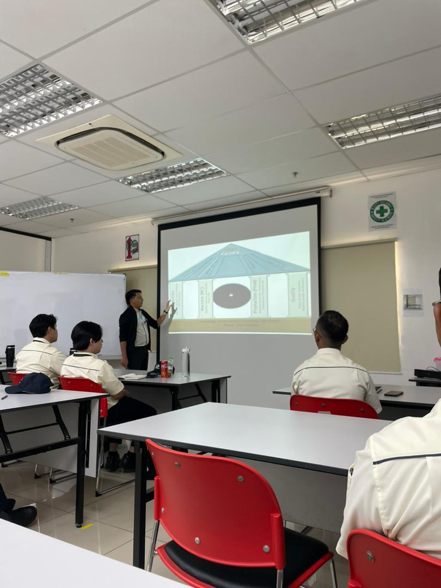
Meningkatkan pengetahuan pekerja dengan aktiviti pembelajaran berterusan
Contoh Abnormal pada Bolt & Nut
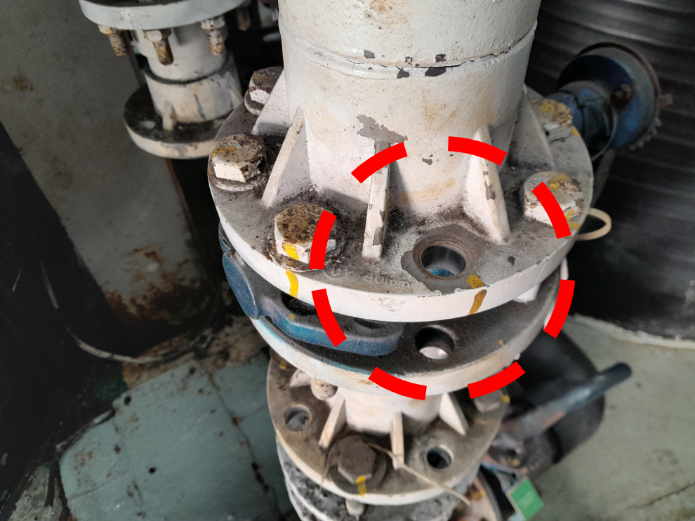
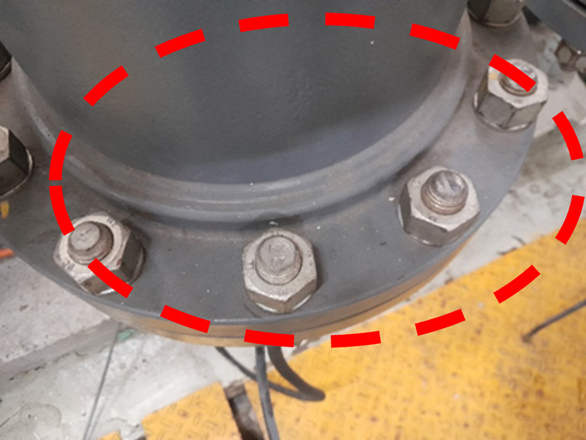
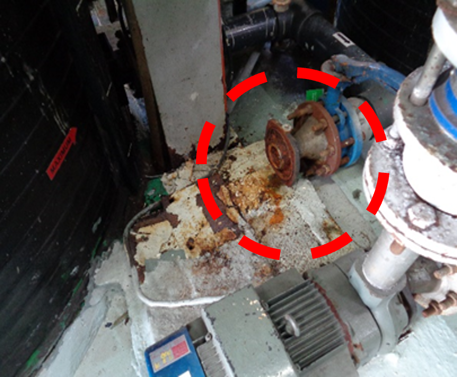
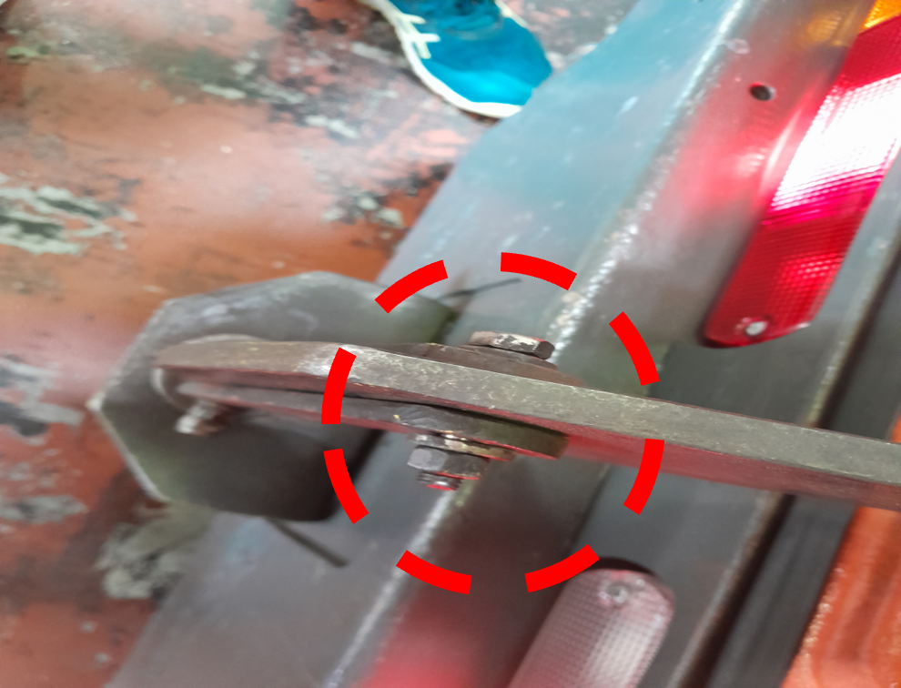
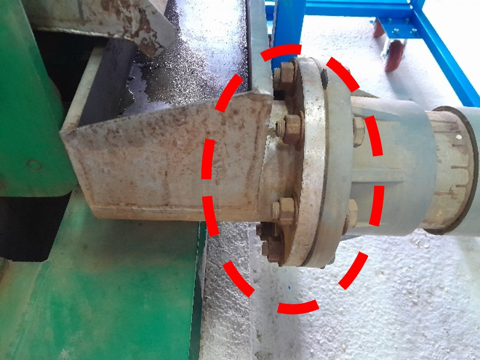
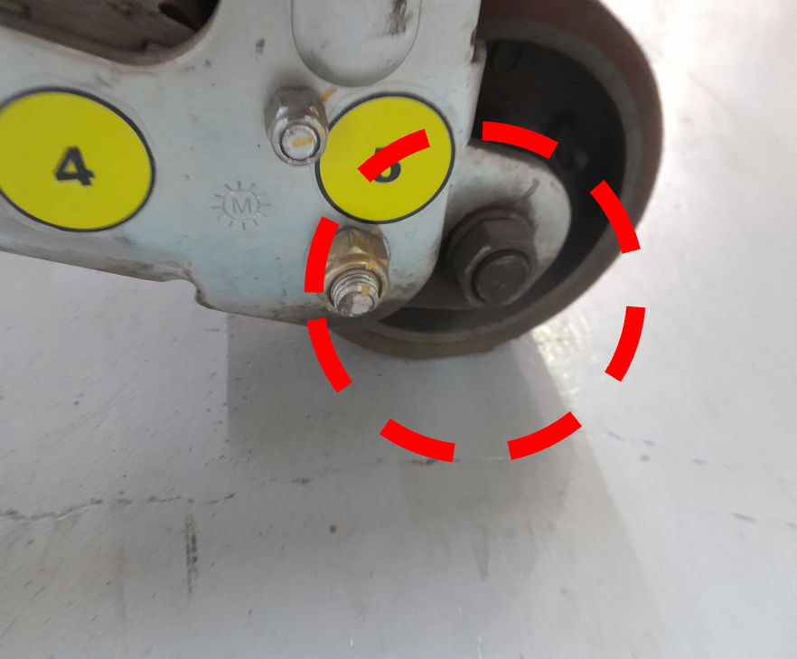
Aliran Prosedur Step 4.2

Kepentingan Bolt & Nut
Bolt & Nut yang longgar boleh mengakibatkan:
- Kerosakan pada mesin
- Kerosakan pada bahagian lain
- Proses auto tergendala (kelonggaran pada sensor)
- Membahayakan keselamatan
- Masalah kualiti
Cara Pemasangan Bolt & Nut
-
Kedudukan bolt di bawah dan nut di atas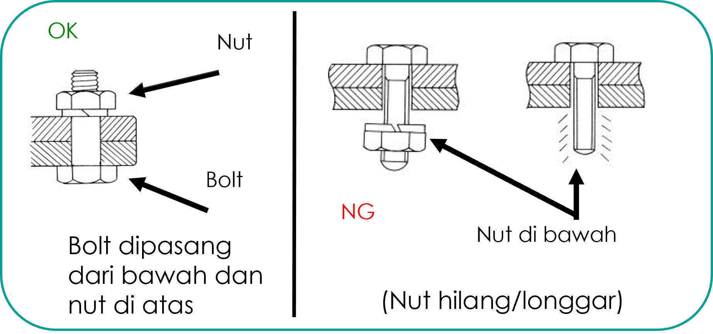Untuk mengelakkan kehilangan atau kelonggaran nut tanpa disedari (memudahkan Pemeriksaan)
-
Bahagian thread pada bolt mesti melebihi nut antara 1 atau 2 thread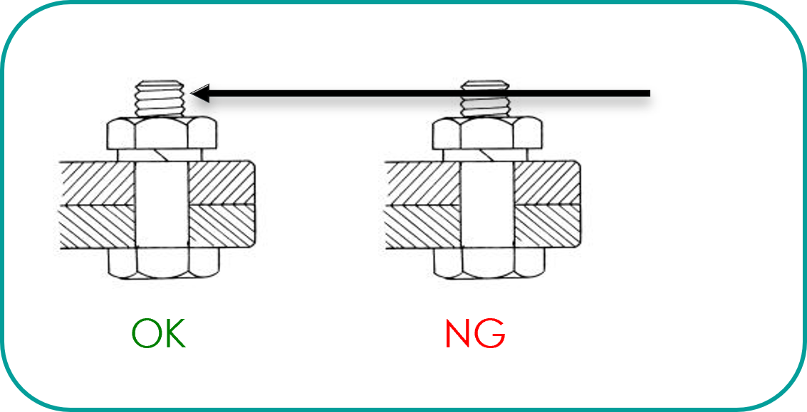
-
Penggunaan double nut untuk mengelakkan kelonggaran mestilah nut yang nipis di bawah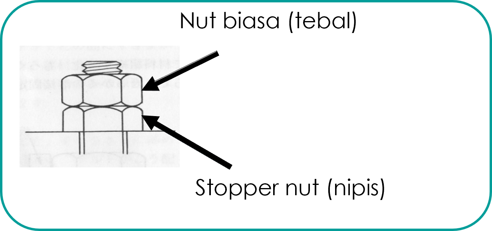
Aktiviti
-
Penandaan Bolt & NutPenandaan bolt dan nut oleh Production dan Maintenance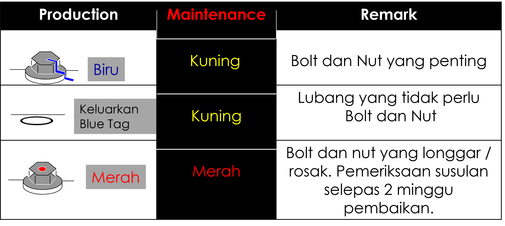
- Nut di bawah jagaan production adalah yang boleh dicapai oleh tangan (iaitu kira-kira 2M dari lantai)
- Warna bolt & nut boleh dimasukkan ke dalam TPM Standard
- Warna bolt & nut juga boleh digunakan mengikut kesesuaian warna
-
Pemantauan PemeriksaanPemeriksaan berterusan terhadap bolt/nut yang telah dibuat penandaan: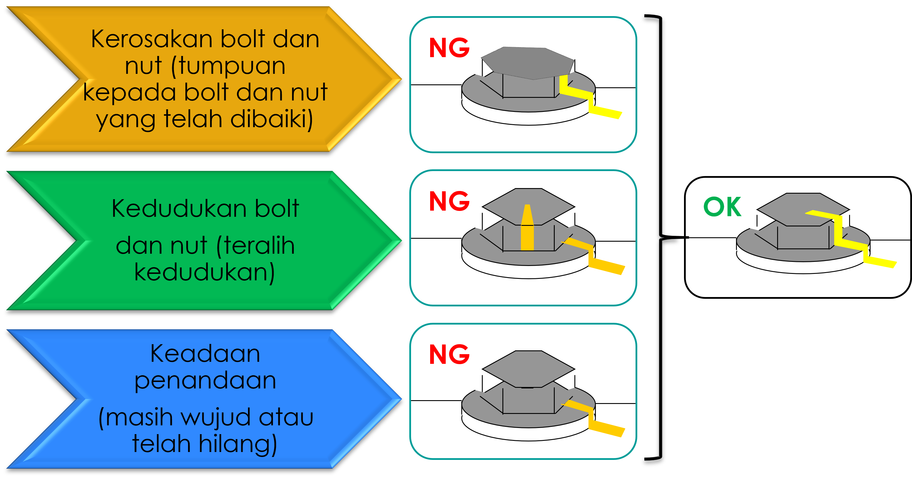
-
Langkah-Langkah Penandaan Bolt & NutPenadaan pada bolt dan nut mestilah dilakukan mengikut langkah-langkah di bawah:1Pastikan bolt dan nut tidak longgar dengan menggunakan peralatan yang sesuai
(spanner, allen key, adjustable spanner)2Marking pada bolt dan nut hendaklah dilakukan mengikut standard yang ditetapkan3Marking hendaklah dilakukan selepas pembersihan dilakukan ke atas bolt dan nut tersebut untuk mengelakkan tertanggal4Aktiviti penandaan hendaklah dilakukan bersama-sama(Production/Maintenance) -
Faktor-Faktor Penandaan Bolt & NutPenandaan bolt dan nut yang penting adalah berdasarkan kepada faktor-faktor berikut:Tempat yang bergegarTempat yang boleh berlaku kerosakan apabila longgarTempat yang boleh mengakibatkan masalah kualiti apabila longgarTempat yang tidak selamat apabila longgar
-
Pemeriksaan Bolt & NutPemeriksaan terhadap bolt dan nut hendaklah dilakukan selepas aktiviti dilakukan untuk memastikan tiada bolt dan nut yang tertinggal berdasarkan kepada Inspection checksheet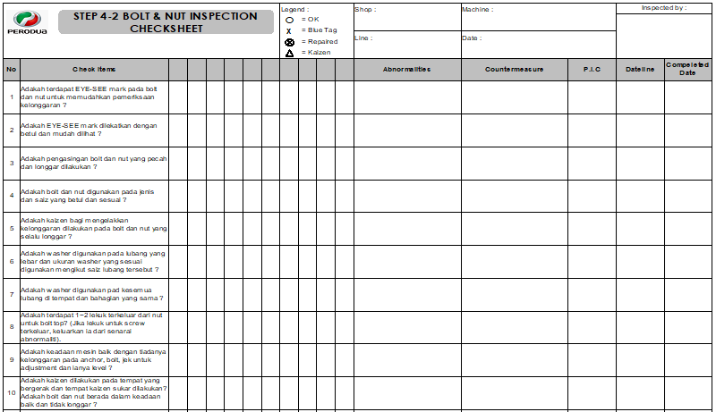
-
Semak TPM StandardMyemak TPM standard dengan memasukkan item pemeriksaan bolt dan nut berdasarkan kepada perkara-perkara di bawah:

-
Diagnosis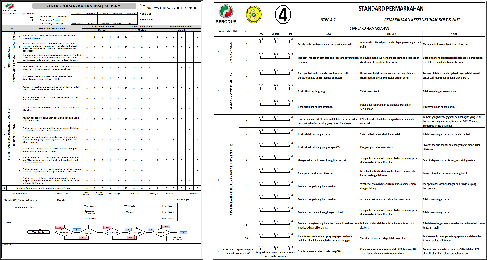